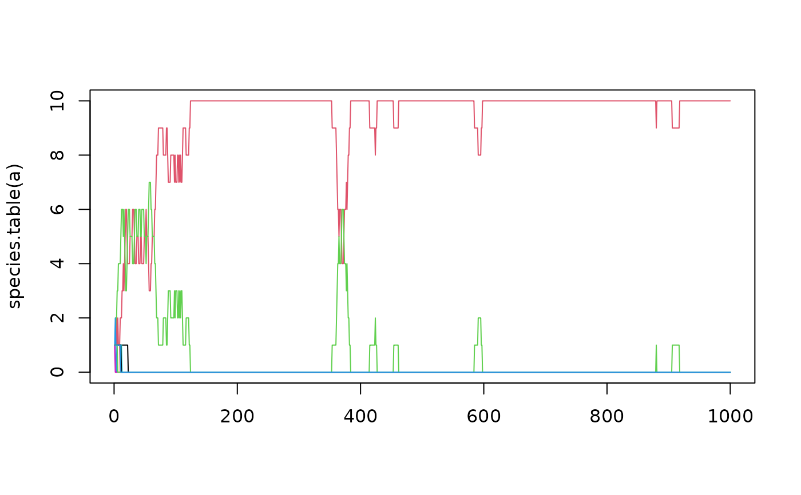

Ecological drift simulation under the Unified Neutral Theory of Biodiversity
untb.RdSimulates ecological drift under the UNTB. Function untb()
carries out the simulation; function select()
carries out a single generational step.
Arguments
- a, start
Starting ecosystem; coerced to class census. Usually, pass an object of class count; see examples. To start with a monoculture of size 10, use
start=rep(1,10)and to usestart=1:10.- prob, prob.of.immigrate, prob.of.mutate
Probability of “new” organism not being a descendent of an existing individual
- D
Number of organisms that die in each timestep
- gens
Number of generations to simulate
- keep
In function
untb()Boolean with defaultFALSEmeaning to return the system at the end of the simulation andTRUEmeaning to return a matrix whose rows are the ecosystem at successive times- meta
In function
untb(), the metacommunity; coerced to acountobject. Default ofNULLmeans to use a “greedy” system in which every mutation gives rise to a new, previously unencountered species. This would correspond to an infinitely large, infinitely diverse, Hubbellian ecosystem (which is not too ridiculous an assumption for a small island near a large diverse mainland).In function
select.immigrate(), a simplified representation of a metacommunity.
Details
Functions select.immigrate() and select.mutate() are not
really intended for the end user; they use computationally efficient
(and opaque) integer arithmetic.
References
S. P. Hubbell 2001. “The Unified Neutral Theory of Biodiversity”. Princeton University Press.
Examples
data(butterflies)
untb(start=butterflies, prob=0, gens=100)
#> 1 2 3 4 5 6 8 7 9 10 11 12 18 14 15 16 19 13 20 21 23 24 25 27 17 22
#> 58 54 52 40 24 21 17 15 14 7 6 6 6 5 5 4 4 3 3 3 3 3 3 3 2 2
#> 26 29 34 28 30 31 32 33 36 37
#> 2 2 2 1 1 1 1 1 1 1
a <- untb(start=1:10,prob=0.005, gens=1000,keep=TRUE)
plot(species.count(a),type="b")
matplot(species.table(a),type="l",lty=1)
